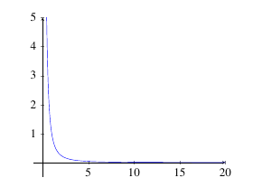
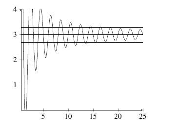
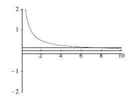

2.6 Limits at Infinity; Horizontal Asymptotes
Limits At Infinity
When we talk about limits at infinity, we mean that we would like to evaluate one of these expressions: \[\lim_{x \rightarrow \infty} f(x) \;\;\;\; \text{or} \;\;\;\; \lim_{x \rightarrow -\infty} f(x).\] That is to say, we want to learn the value of the function as \(x\) gets infinitely large in the positive or negative direction.
Definition: Let \(f\) be a function defined on some interval \((a,\infty)\). Then \[\lim_{x \rightarrow \infty} f(x) = L\] means that the values of \(f(x)\) can be made arbitrarily close to \(L\) by taking \(x\) sufficiently large.
Definition: Let \(f\) be a function defined on some interval \((-\infty, a)\). Then \[\lim_{x \rightarrow -\infty} f(x) = L\] means that the values of \(f(x)\) can be made arbitrarily close to \(L\) by taking \(x\) sufficiently large but negative.
Let’s see how this looks with an example.
Example: Determine \(\displaystyle\lim_{x \rightarrow \infty} \dfrac{1}{x^2}\).
Example: We will take values of \(x\) getting increasingly large.
| \(x\) | \(\frac{1}{x^2}\) |
|---|---|
| 1 | 1 |
| 10 | 0.01 |
| 100 | 0.0001 |
| 1000 | 0.000001 |
| 10000 | 0.00000001 |
So, it appears that as \(x \rightarrow \infty\), the function \(f(x) = \dfrac{1}{x^2} \rightarrow 0\). Therefore, we say \[\lim_{x \rightarrow \infty} \dfrac{1}{x^2} = 0.\]
|  |
|---|
The limit laws from Chapter \(\ref{LimitLaws}\) all hold (with the exception of the identity law) if you replace the \(x \rightarrow a\) with \(x \rightarrow \infty\) or \(x \rightarrow -\infty\). One particular result that follows from these limit laws is below.
Theorem: Let \(c \in \mathbb{R}\). If \(r > 0\) is a rational number, then \[\lim_{x \rightarrow \infty} \dfrac{c}{x^r} = 0.\] If \(r > 0\) is a rational number such that \(x^r\) is defined for all \(x<0\), then \[\lim_{x \rightarrow -\infty} \dfrac{c}{x^r} = 0.\]
Example: Evaluate \(\displaystyle\lim_{x \rightarrow \infty} 3x^3 - 5x + 10\).
Solution: Using our limit laws, we find \[\begin{align*} \lim_{x \rightarrow \infty} 3x^3 - 5x + 10 &= \lim_{x \rightarrow \infty} x^3 \left(3 - \frac{5}{x^2} + \frac{10}{x^3} \right)\\ &= \lim_{x \rightarrow \infty} x^3 \lim_{x \rightarrow \infty}\left(3 - \frac{5}{x^2} + \frac{10}{x^3} \right)\\ &= \lim_{x \rightarrow \infty} x^3 \times \left(3 - 0 + 0 \right)\\ &= \lim_{x \rightarrow \infty} x^3 \times 3\\ &= \infty. \end{align*}\] Therefore, \(\displaystyle\lim_{x \rightarrow \infty} 3x^3 - 5x + 10 = \infty\).
Example: Evaluate \(\displaystyle\lim_{x \rightarrow -\infty} 2x^5 - x^4 + 3x\).
Solution: Using limit laws, \[\begin{align*} \lim_{x \rightarrow -\infty} 2x^5 - x^4 + 3x &= \lim_{x \rightarrow -\infty} x^5 \left(2 - \frac{1}{x} + \frac{3}{x^4} \right)\\ &= \lim_{x \rightarrow -\infty} x^5 \lim_{x \rightarrow -\infty} \left(2 - \frac{1}{x} + \frac{3}{x^4} \right)\\ &= \lim_{x \rightarrow -\infty} x^5 \times \left(2 - 0 + 0 \right)\\ &= \lim_{x \rightarrow -\infty} x^5 \times 2\\ &= -\infty. \end{align*}\] Therefore, \(\displaystyle\lim_{x \rightarrow -\infty} 2x^5 - x^4 + 3x = -\infty\).
From the previous two examples, it appears that the term that makes the most difference in a limit at infinity is the dominant term.
Theorem (Infinite Limits of Polynomials): If \(p(x) = a_nx^n + a_{n-1}x^{n-1} + \cdots + a_1x + a_0\) is a polynomial of degree \(n\), then \[\lim_{x \rightarrow \infty} p(x) = \lim_{x \rightarrow \infty} a_nx^n \;\;\;\; \text{and} \;\;\;\; \lim_{x \rightarrow -\infty} p(x) = \lim_{x \rightarrow -\infty} a_n x^n.\]
Example: Evaluate \(\displaystyle\lim_{x \rightarrow \infty} \dfrac{2x^4 - x^2 + 19}{-3x^4 + 2x - 1}\).
Solution: Limit laws tell us that \[\begin{align*} \lim_{x \rightarrow \infty} \dfrac{2x^4 - x^2 + 19}{-3x^4 + 2x - 1} &= \dfrac{\lim_{x \rightarrow \infty} 2x^4 - x^2 + 19}{\lim_{x \rightarrow \infty}-3x^4 + 2x - 1}\\ &= \dfrac{\lim_{x \rightarrow \infty} 2x^4}{\lim_{x \rightarrow \infty}-3x^4}\\ &= \lim_{x \rightarrow \infty} \dfrac{2x^4}{-3x^4}\\ &= \lim_{x \rightarrow \infty} \dfrac{2}{-3}\\ &= \dfrac{-2}{3} \end{align*}\] Therefore, \(\displaystyle\lim_{x \rightarrow \infty} \dfrac{2x^4 - x^2 + 19}{-3x^4 + 2x - 1} = -2/3\).
Example: Evaluate \(\displaystyle\lim_{x \rightarrow \infty} \dfrac{\sqrt{5x^2 - x + 1}}{2x - 5}\).
Solution: From the limit laws, \[\begin{align*} \lim_{x \rightarrow \infty} \dfrac{\sqrt{5x^2 - x + 1}}{2x - 5} &= \dfrac{\lim_{x \rightarrow \infty} \sqrt{5x^2 - x + 1}}{\lim_{x \rightarrow \infty} 2x - 5}\\ &= \dfrac{ \sqrt{\lim_{x \rightarrow \infty}5x^2 - x + 1}}{\lim_{x \rightarrow \infty} 2x}\\ &= \dfrac{ \sqrt{\lim_{x \rightarrow \infty}5x^2}}{\lim_{x \rightarrow \infty} 2x}\\ &= \lim_{x \rightarrow \infty}\dfrac{ \sqrt{5x^2}}{2x}\\ &= \lim_{x \rightarrow \infty}\dfrac{ \sqrt{5}x}{2x}\\ &= \lim_{x \rightarrow \infty}\dfrac{ \sqrt{5}}{2}\\ &= \dfrac{ \sqrt{5}}{2}. \end{align*}\] Therefore, \(\displaystyle\lim_{x \rightarrow \infty} \dfrac{\sqrt{5x^2 - x + 1}}{2x - 5} = \dfrac{\sqrt{5}}{2}\).
Example: Evaluate \(\displaystyle\lim_{x \rightarrow \infty} \sqrt{4x^4 - 3x + 1} - 2x^2\).
Solution: Using limit laws, \[\begin{align*} \lim_{x \rightarrow \infty} \sqrt{4x^4 - 3x + 1} - 2x^2 &= \sqrt{\lim_{x \rightarrow \infty}4x^4 - 3x + 1} - \lim_{x \rightarrow \infty} 2x^2\\ &= \sqrt{\lim_{x \rightarrow \infty}4x^4} - \lim_{x \rightarrow \infty} 2x^2\\ &= \lim_{x \rightarrow \infty} \sqrt{4x^4} - 2x^2\\ &= \lim_{x \rightarrow \infty} 2x^2 - 2x^2\\ &= \lim_{x \rightarrow \infty} 0\\ &= 0. \end{align*}\] Therefore, \(\displaystyle\lim_{x \rightarrow \infty} \sqrt{4x^4 - 3x + 1} - 2x^2 = 0\).
Example: Evaluate \(\displaystyle\lim_{x \rightarrow -\infty} \sin(x)\).
Solution: As \(x \rightarrow -\infty\), the function \(f(x) = \sin(x)\) oscillates infinitely many times between 1 and \(-1\). Therefore, it never converges to a finite number. Therefore, \(\displaystyle\lim_{x \rightarrow -\infty} \sin(x)\) does not exist.
Practice Problems
- Determine each of the following limits.
\(\displaystyle\lim_{x \rightarrow \infty} 5x^4 - 3x^3 + x^2 - 5\)
\(\displaystyle\lim_{x \rightarrow -\infty} 5x^4 - 3x^3 + x^2 - 5\)
\(\displaystyle\lim_{x \rightarrow \infty} 7x^3- 2x^2 + x - 10\)
\(\displaystyle\lim_{x \rightarrow -\infty} 7x^3- 2x^2 + x - 10\)
\(\displaystyle\lim_{x \rightarrow \infty} \sqrt{x^4 - 3x^2 + x - 1}\)
\(\displaystyle\lim_{x \rightarrow -\infty} \sqrt{x^6 - x^4 + x^2 + 1}\)
\(\displaystyle\lim_{x \rightarrow \infty} \dfrac{x^4 - x^3 - x - 1}{3x^4 - 2x^2 + x - 5}\)
\(\displaystyle\lim_{x \rightarrow -\infty} \dfrac{5x^7 - 2x^5 +2 x - 1}{2x^7 + 3x^4 + 100x +20}\)
\(\displaystyle\lim_{x \rightarrow \infty} \dfrac{\sqrt[4]{x^4 - x^2 + 1}}{5 - 3x}\)
\(\displaystyle\lim_{x \rightarrow -\infty} \dfrac{\sqrt{9x^2 - 3x + 2}}{\sqrt[3]{27x^3 + 15x^2 - 4x + 1}}\)
\(\displaystyle\lim_{x \rightarrow \infty} \dfrac{4-5x}{\sqrt[5]{15+ x^3 - x^4 + 10x^5}}\)
- Determine each of the following limits.
\(\displaystyle\lim_{x \rightarrow \infty} \cos(1/x)\)
\(\displaystyle\lim_{x \rightarrow -\infty} \sqrt{3x^4 - 4x + 1} - \sqrt{3}x^2\)
\(\displaystyle\lim_{x \rightarrow \infty} \ln(1/x)\)
\(\displaystyle\lim_{x \rightarrow -\infty} \arctan(-2/x)\)
Limits at Infinity by Definition
We have dealt with the precise definition of a limit as it relates to limits as finite values. We now discuss limits of functions at infinity.
Definition: Let \(f\) be a function defined on the interval \((a, \infty)\) for some \(a \in \mathbb{R}\). Then \[\lim_{x \rightarrow \infty} f(x) = L,\] if for any given \(\varepsilon > 0\), there exists an \(M > 0\) such that \[|f(x) - L| < \varepsilon \;\;\; \text{provided} \;\;\; x > M.\]
|  |
|---|
Definition:
Let \(f\) be a function defined on the interval \((-\infty, b)\) for some \(b \in \mathbb{R}\). Then \[\lim_{x \rightarrow -\infty} f(x) = L,\] if for any given \(\varepsilon > 0\), there exists an \(M > 0\) such that \[|f(x) - L| < \varepsilon \;\;\; \text{provided} \;\;\; x < M.\]
For an infinite limit to exist, the value of the function must be asymptotic to the limit value. This means that as \(x\) exceeds some value \(M\) (either in the positive or negative direction), the function value must be within \(\varepsilon\) units from the limit value for every \(x\) beyond \(M\).
|  |
|---|
Example: Use the precise definition of a limit to show that \(\displaystyle\lim_{x \rightarrow \infty} \dfrac{1}{x} = 0\).
Solution: Let \(\varepsilon > 0\) be given. We need to find an \(M > 0\) such that \[|\dfrac{1}{x} - 0| = \dfrac{1}{|x|} < \varepsilon,\] provided \(x > M\). Take \(M = \dfrac{1}{\varepsilon}\). Then for any \(x > M\), we have \[\begin{align*} \left|\dfrac{1}{x} - 0 \right| &= \dfrac{1}{|x|}\\ &< \dfrac{1}{M}\\ &= \dfrac{1}{1/\varepsilon}\\ &= \varepsilon. \end{align*}\] Since \(\left|\dfrac{1}{x} - 0 \right| < \varepsilon\), we have shown that \[ \lim_{x \rightarrow \infty} \dfrac{1}{x} = 0.\]
Practice Problems
- Prove each of the following limits using the precise definition of a limit.
\(\displaystyle\lim_{x \rightarrow \infty} \dfrac{1}{x} +3 = 3\)
\(\displaystyle\lim_{x \rightarrow \infty} \dfrac{1}{x^2} = 0\)
\(\displaystyle\lim_{x \rightarrow -\infty} \dfrac{1}{x} = 0\)
\(\displaystyle\lim_{x \rightarrow \infty} \dfrac{1}{\sqrt{x}} = 0\)
\(\displaystyle\lim_{x \rightarrow \infty} \ln(1+1/x) = 0\)
\(\displaystyle\lim_{x \rightarrow \infty} \dfrac{1}{e^x}=0\)
B. If \(r\) is a positive rational number and \(c\) is any real number, prove \[\lim_{x \rightarrow \infty} \dfrac{c}{x^r} = 0.\]
C. If \(r\) is a positive rational number, \(c\) is any real number and \(x^r\) is defined for \(x < 0\), prove \[\lim_{x \rightarrow -\infty} \dfrac{c}{x^r} = 0.\]
D. If \(p(x) = a_nx^n + a_{n-1}x^{n-1} + \cdots + a_1x + a_0\) is a polynomial of degree \(n\), prove \[\lim_{x \rightarrow \infty} p(x) = \lim_{x \rightarrow \infty} a_nx^n.\]